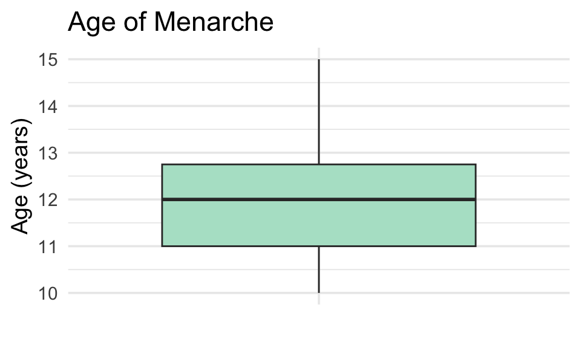
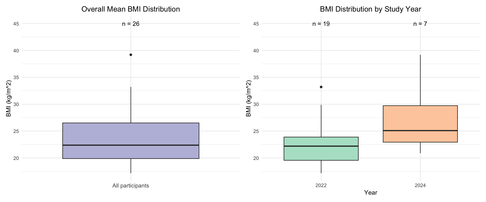
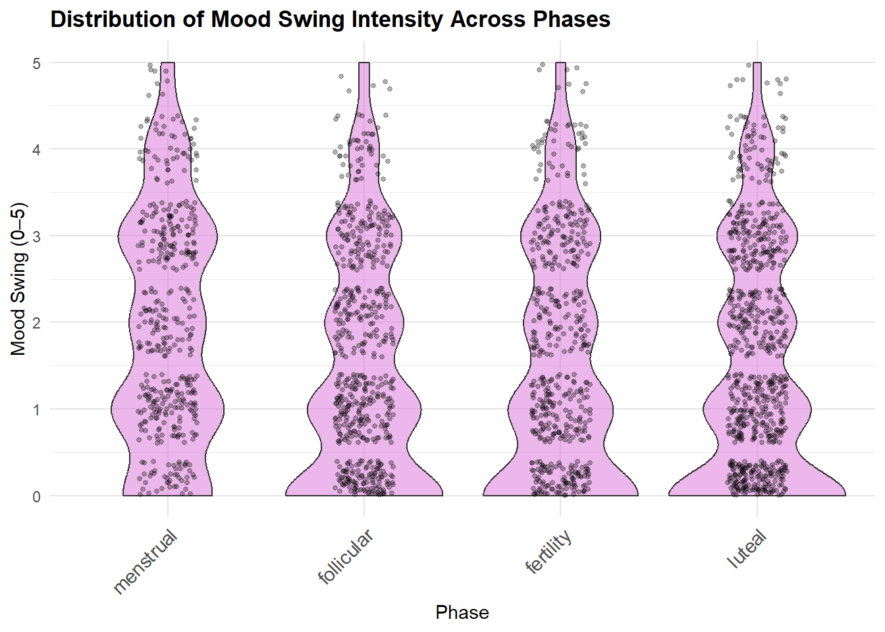
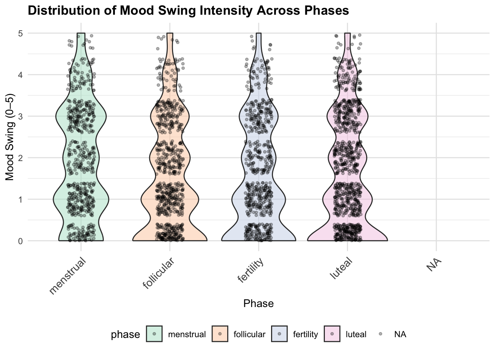
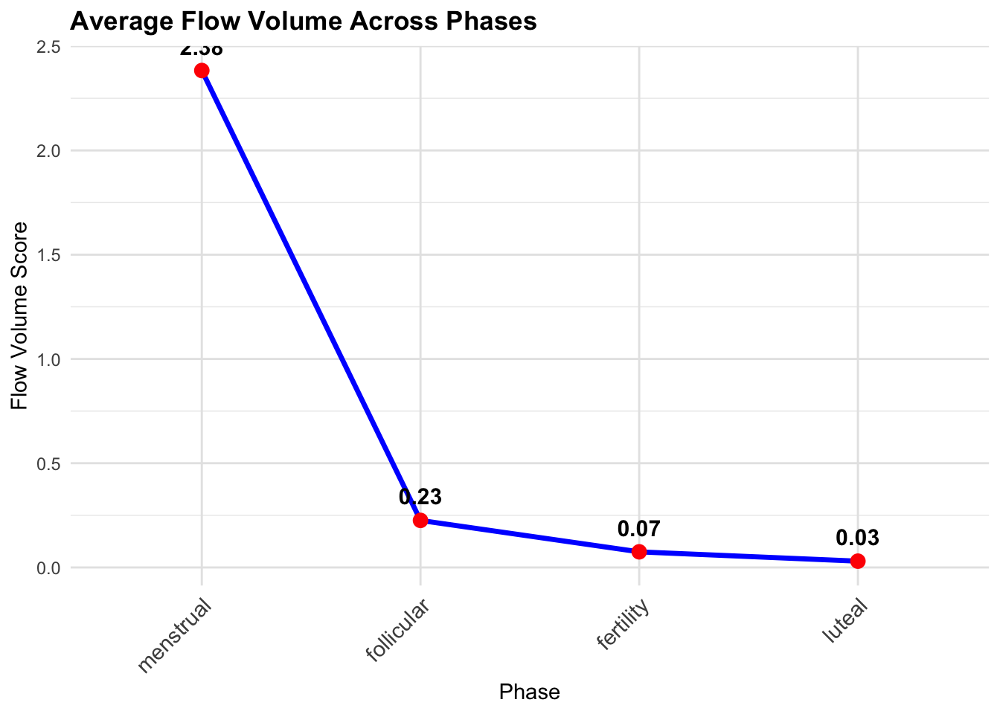
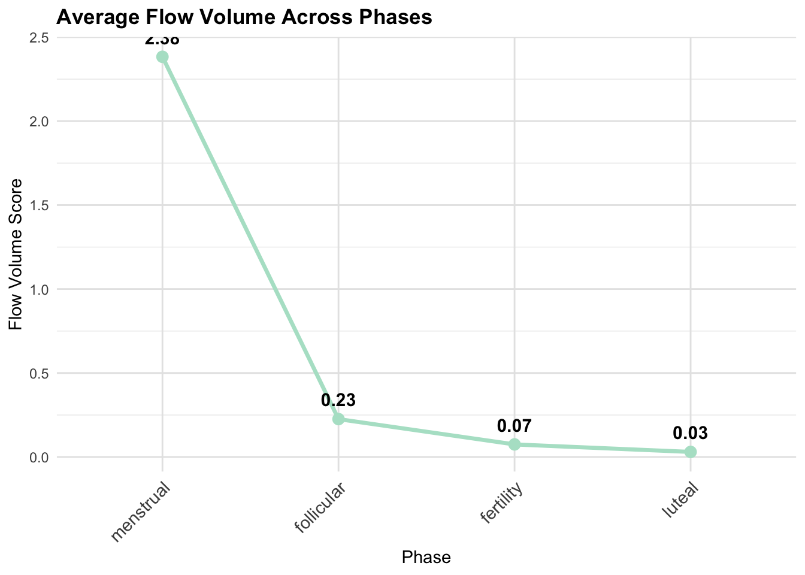
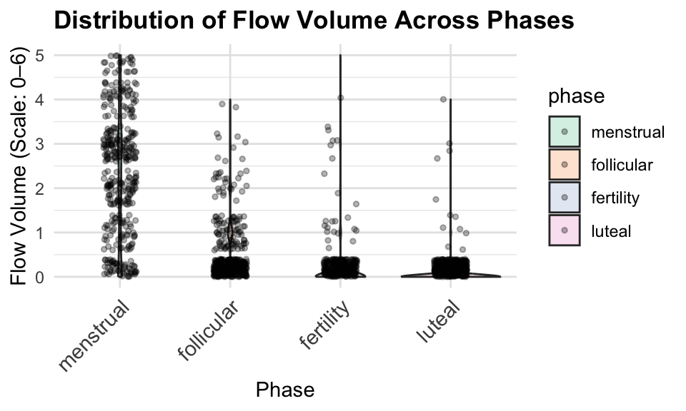
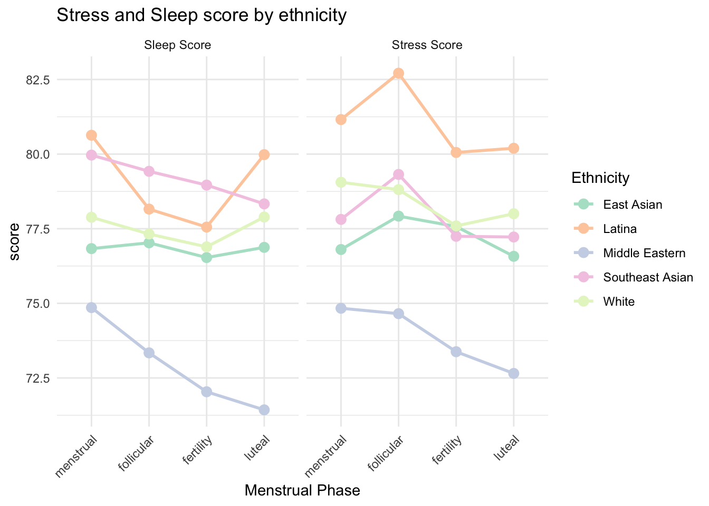
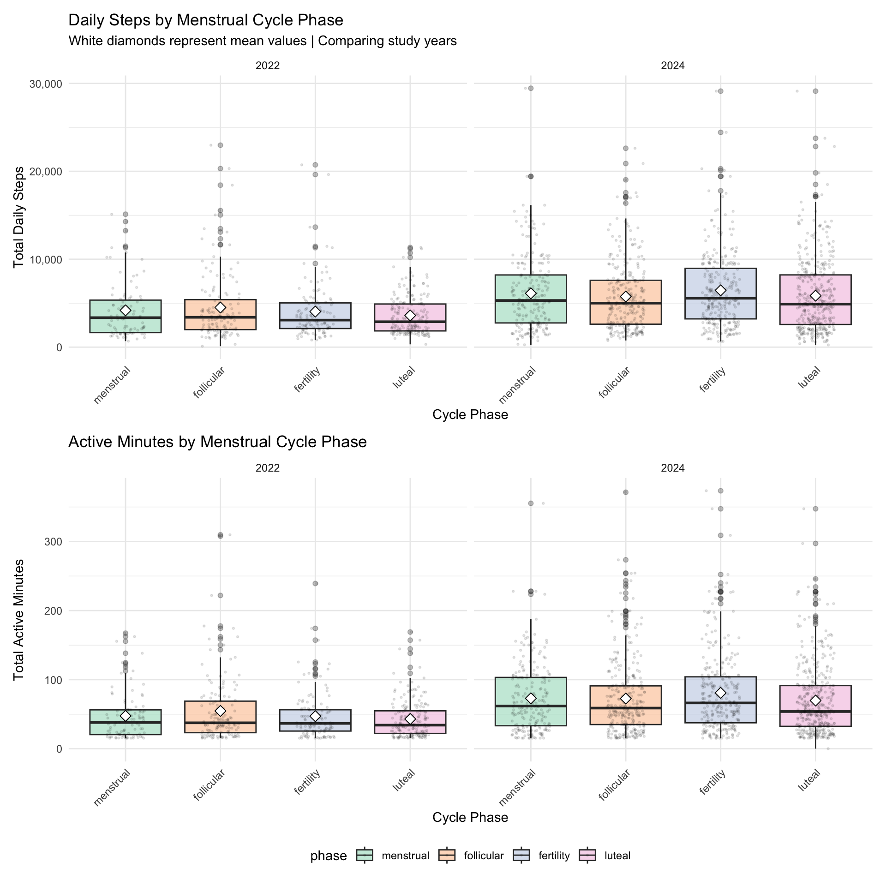
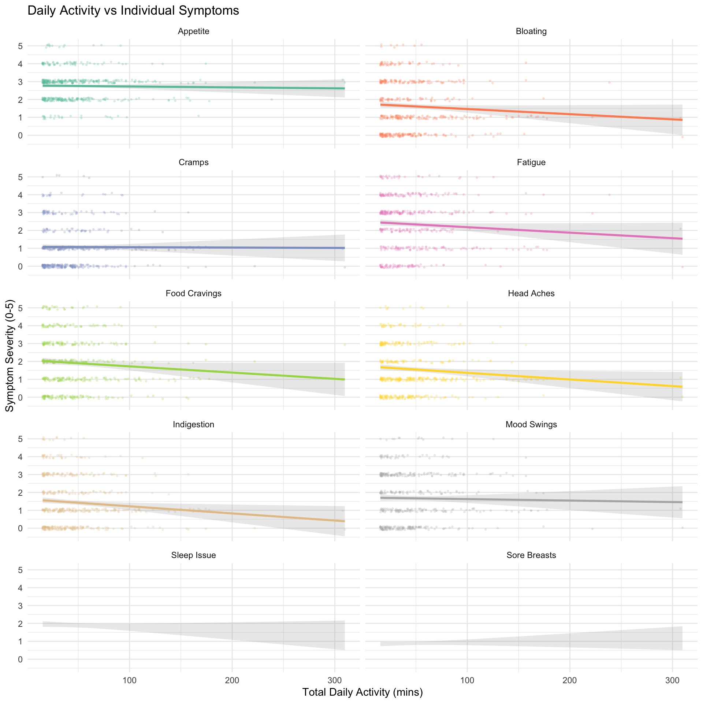

REPORT
# Load packages
library(tidyverse)
library(ggplot2)
library(modelr)
library(mgcv)
library(dplyr)
library(tidyr)
library(patchwork)
library(lme4)
library(lmerTest)
library(gt)
library(ggsci)
library(knitr)
library(broom.mixed) # for tidy
library(scales)
library(kableExtra)
# Set plot theme
theme_set(theme_minimal() + theme(legend.position = "bottom"))
options(
ggplot2.discrete.colour = function(...) scale_colour_brewer(..., palette = "Pastel2"),
ggplot2.discrete.fill = function(...) scale_fill_brewer(..., palette = "Pastel2"),
ggplot2.continuous.colour = function(...) scale_colour_distiller(..., palette = "PuRd"),
ggplot2.continuous.fill = function(...) scale_fill_distiller(..., palette = "PuRd")
)Motivation
Half of the world’s population has experienced or will experience menstruation; a physiological function that typically occurs monthly for several decades. For young adults who menstruate, symptoms and regular menstruation can serve as a vital health indicator. Abnormal symptoms can further suggest reproductive tract abnormalities, such as uterine fibroids, endometriosis, and other abnormalities, which may be attributed to lifestyle characteristics.
While relationships between lifestyle factors (exercise, sleep, stress) and menstrual health are generally known, much of this knowledge comes from self-reported surveys. Our team of all women who have personally navigated menstrual symptoms, saw an opportunity to examine these connections using wearable device data that captures daily physiological metrics alongside self-reported symptoms.
By leveraging Fitbit data with menstrual self-reported menstrual symptoms from a cohort of young adult menstruators, we aim to better understand the influence of lifestyle factors on menstrual health. Understanding these patterns can help individuals who menstruate understand how to better manage concerning symptoms or identify when abnormal symptoms could be indicative of a more serious health concern.
Initial Questions
- What are the demographic and health characteristics of participants in this study?
- How do hormone fluctuations across the cycle correlate with reported symptoms?
- How do sleep quality and stress levels vary across menstrual cycle phases, and do hormonal changes explain these patterns?
- Does physical activity level influence the severity of menstrual symptoms such as pain, bloating, and fatigue?
- Can we use wearable data and self-reported information to predict menstrual symptom severity?
Data
Data Sources
We utilized the inclusive, multimodal, longitudinal, and de-identified mcPHASES (menstrual cycle Physiological, Hormonal, and Self-Reported Events and Symptoms) dataset for menstrual health tracking with wearable devices.
Data was collected from 42 menstruating young adults in Canada over two 3-month intervals: Interval 1 (January–April 2022) and Interval 2 (July–October 2024). Participants wore Fitbit Sense smartwatches to measure physiological signals, and Mira Plus Starter Kits to track their hormone levels. Participants also self-reported daily symptom experiences like cramps, sleep quality, and stress levels via a smartphone diary app.
The original dataset contains 23 structured tables organized by signal category. For this project, we focused on the lifestyle factors such as exercise, sleep, and stress, and menstrual cycle symptoms. The datasets we used are the following:
- Demographics:
subject_info.csv: demographic data such as age, education, and age at menarche, and background survey responses collected at the start of the studyheight_and_weight.csv: participant’s baseline height and weight
- Hormone and Symptoms:
hormones_and_selfreport.csv：hormone data (LH, E3G, PdG) from the Mira fertility device and daily self-reported symptom survey responses (e.g., cramps, mood, menstrual flow) on a 6-level Likert-type scale from 0 (“Not at all”) to 5 (“Very high”)
- Lifestyle Factors:
stress_score.csv: daily Stress Management Score from those who have access to the Stress Management experiencesleep.csv: sleep session logs including timestamps, durations, and quality metrics collected by Fitbitsleep_score.csv: daily sleep score breakdowns provided by Fitbit, summarizing overall sleep quality based on multiple contributing factorsexercise.csv: individual logged exercise sessions collected by Fitbit
In total, we have 5 tidy dataframes:
subject_info- Contains demographics and background survey responses data where each row represents a participant
- A total of 62 observations of 19 variables
hormone_symptoms- Contains daily hormone and self-reported symptom-related data
- A total of 5659 observations of 36 variables
sleep_stress_daily- Contains daily sleep and stress related data
- A total of 5400 observations of 7 variables
exercise_daily- Contains daily exercise related data
- A total of 1744 observations of 12 variables
all_daily_data- The multimodal merged version of dataframes 2,3,4, where each row represents a daily data for a person in a specific study year, including hormone and self-reported symptoms, sleep score, stress score, daily exercise data.
- A total of 5659 observations of 50 variables
All dataframes can be linked by participant’s id.
Besides subejct_info, other dataframes can be further
linked by day_in_study and study_interval.
Dataframes
subject_info: Subject-Relevant Data
The subject_info dataframe contains participants
demographics data from subject_info.csv and
height_and_weight.csv, as well as participants study
enrollment year (this piece of information is from
hormones_and_selfreport.csv).
It contains a total of 62 observations of 19 variables. Some key variables are the following:
id: participant’s unique identifier- Age relevant variables:
birth_yearandage_of_first_menarche - Height and weight related variables:
avg_height,avg_weight,bmi - Study enrollment related information:
study(flag of which study the participant enrolled in,1=2022,2=2024,3=both),year(the year of study) - Categorical/Factor variables like
ethnicity,education,self_report_menstrual_health_literacy, etc.
ht_wt = read_csv("data/height_and_weight.csv")|>
janitor::clean_names() |>
# calculate mean height/weight
rowwise() |>
mutate(
avg_height = mean(c(height_2022, height_2024), na.rm = TRUE),
avg_weight = mean(c(weight_2022, weight_2024), na.rm = TRUE)
) |>
ungroup()
# import csv file
hormones_and_selfreport = read_csv("data/hormones_and_selfreport.csv") |>
janitor::clean_names()
# extract study_flag
study_flag <- hormones_and_selfreport |>
distinct(id, study_interval) |>
mutate(flag = 1,
study_interval = paste0("study_", study_interval)) |>
pivot_wider(
names_from = study_interval,
values_from = flag,
values_fill = 0
)
# read in subject-info.csv
subject_info_raw = read_csv("data/subject-info.csv") |>
janitor::clean_names()
subject_info <- subject_info_raw |>
# merging
left_join(ht_wt, by = "id") |>
left_join(study_flag, by = "id") |>
# add a study_flag
mutate(
study = case_when(
study_2022 == 1 & study_2024 == 1 ~ 3L, # both 2022 & 2024
study_2022 == 1 & study_2024 == 0 ~ 1L,
study_2024 == 1 & study_2022 == 0 ~ 2L,
TRUE ~ NA_integer_
)
) |>
# pivot_long for wt & ht
pivot_longer(
cols = c(weight_2022, weight_2024, height_2022, height_2024),
names_to = c(".value", "year"),
names_sep = "_"
) |>
rename(
weight_yr = weight,
height_yr = height
) |>
# keep only the relevant study year
filter(
(study == 1 & year == 2022) |
(study == 2 & year == 2024) |
(study == 3)
) |>
# calculate age
mutate(
year = as.numeric(year),
birth_year = as.numeric(birth_year),
age = year - birth_year
) |>
# get a mean age for each id
group_by(id) |>
mutate(
mean_age = mean(age, na.rm = TRUE)
) |>
ungroup() |>
# get BMI
mutate(
bmi = weight_yr / ( (height_yr / 100)^2 )
)|>
# convert NaN to NA
mutate(
across(c(avg_weight, avg_height),
~ if_else(is.nan(.), NA_real_, .))
) |>
#this factors variables and also creates "gender abrv", "education abrv", "race_category" which are simplified versions of these variables for use in tables, some figures, and regression models later on
mutate(
education = str_trim(education),
education_abrv = case_when(
education == "High school degree or equivalent (e.g. GED)" ~ "High School",
education == "Some university/ post-secondary, no degree" ~ "Some College",
education == "Bachelor's degree (e.g. BA, BS)" ~ "Bachelors",
education %in% c("Master's degree (e.g. MA, MS, MEd)", "Doctorate or professional degree") ~ "Graduate Degree",
TRUE ~ "Other"),
education_abrv = factor(
education_abrv,
levels = c("High School", "Some College", "Bachelors", "Graduate Degree or Higher", "Other"),
ordered = TRUE),
self_report_menstrual_health_literacy = factor(
self_report_menstrual_health_literacy,
levels = c("Non-existant", "Low", "Medium", "High"),
ordered = TRUE),
gender_abrv = case_when(
gender %in% c("Gender Fluid", "Non-binary") ~ "Gender Fluid or Non-binary",
gender %in% c("Prefer not to say", "Other") ~ "Prefer not to say or Other",
gender == "Woman" ~ "Woman"),
gender_abrv = factor(gender_abrv, levels = c("Woman", "Gender Fluid or Non-binary", "Prefer not to say or Other")),
sexually_active = factor(sexually_active, levels = c("Yes", "No", "Prefer not to say")),
race_category = case_when(
ethnicity %in% c("East Asian", "South Asian", "Southeast Asian") ~ "Asian",
ethnicity == "White" ~ "White",
TRUE ~ "Other"),
race_category = factor(
race_category, levels = c("Asian", "White", "Other"))) |>
# only need 1 study_interval flag to indicate the study year
mutate(study_interval = year) |>
select(-study_2022, -study_2024, -year, -study) |>
# rearrange the column order
select(
id,
study_interval,
everything()
)all_daily_data: Merged Multimodal Daily Data
The all_daily_data is a merged multimodal dataframe that
contains all daily-level data from
hormone_symptoms, exercise_daily, and
sleep_stress_daily dataframes, and used
hormone_symptoms as the anchor dataframe. Each row
represents a daily data for a person in a specific study year (including
sleep score, stress score, daily exercise data, hormone and
self-reported symptoms).
It contains a total of 5659 observations of 50 variables, with unique
combination of key identifiers (id,
study_interval, and day_in_study). Additional
flag variables that are not in 3 multimodal dataframes are
exercise_flag and sleep_stress_flag to
indicate if the observation day had at least one recorded exercise
session or if both stress and sleep scores are present.
all_daily_data <- hormone_symptoms |>
# MERGE exercise & hormone
left_join(exercise_daily, by = c("id", "study_interval", "day_in_study")) |>
# add flag exercised_flag for easy filtering in the future analyses
# only need to keep exercised_flag==1 to have all rows with exercise data
mutate(
exercised_flag = ifelse(!is.na(n_sessions) & n_sessions > 0, 1, 0),
menstruation = factor(if_else(phase == "menstrual", 1, 0),
levels = c(0, 1),
labels = c("No", "Yes"))
) |>
# MERGE sleep & stress score data
# noticed hormone_symptoms df has a stress_score column
# drop it
select(-stress_score) |>
left_join(sleep_stress_daily, by = c("id", "study_interval", "day_in_study")) |>
# add flag sleep_stress_flag for easy filtering in the future analyses
mutate(
sleep_stress_flag = ifelse(
!is.na(stress_score) & !is.na(sleep_score),1,0
)
)
# MERGE demographic data
# left_join(subject_info, by = c("id", "study_interval")) Exploratory Data Analysis
Participant Characteristics
summary_table_gt| Mean (Max-Min) or Count (%) | ||
|---|---|---|
| Age | 21.2 (18–29) | |
| BMI | 23.8 (17.2-39.2) | |
| Age at Menarche | 11.9 (10–15) | |
| Ethnicity | African | 1 (1.6%) |
| Caribbean | 1 (1.6%) | |
| East Asian | 20 (32.3%) | |
| Latina | 2 (3.2%) | |
| Middle Eastern | 7 (11.3%) | |
| South Asian | 1 (1.6%) | |
| Southeast Asian | 16 (25.8%) | |
| White | 14 (22.6%) | |
| Gender | Woman | 55 (88.7%) |
| Gender Fluid or Non-binary | 3 (4.8%) | |
| Prefer not to say or Other | 4 (6.5%) | |
| Education | High School | 7 (11.3%) |
| Some College | 34 (54.8%) | |
| Bachelors | 16 (25.8%) | |
| NA | 5 (8.1%) | |
| Sexually Active | Yes | 22 (35.5%) |
| No | 36 (58.1%) | |
| Prefer not to say | 4 (6.5%) |
The cohort includes 42 participants with a median age of ~21 years and a small number of older outliers (ages 27 and 29). This relatively narrow, young age range reduces age-related heterogeneity in reproductive hormones and symptomatic expression, helping to isolate phase-related effects.
The average age of menarche was 11.9, though some participants reported first menstruating as late as age 15. Our participants largely identified as women (88.7%) and as Asian (59.7%) or white (22.6%). More than 4 in 5 participants had completed at least some college, with 25.8% having a college degree and 8.1% having a graduate degree.
Age of first menarche
menarche_plot = ggplot(subject_info, aes(x = "", y = age_of_first_menarche, fill="Menarche")) +
geom_boxplot(show.legend = FALSE) +
labs(title = "Age of Menarche",
y = "Age (years)",
x = "") +
theme_minimal(base_size = 14) +
theme(axis.text.x = element_blank(),
axis.ticks.x = element_blank())
menarche_plot
Age of first menarche ranges roughly from 10 to 15 years with a median around 12 and a tight IQR (≈11–12.75). This homogeneous menarche distribution suggests a relatively standard reproductive development history across participants; because very early or very late menarche can influence cycle regularity and hormonal profiles, the lack of extreme variability here supports attributing observed hormone–symptom patterns primarily to current cycle phase rather than developmental differences.
BMI
overall_bmi_n <- subject_info |>
filter(!is.na(bmi)) |>
summarize(n = n())
bmi_all <- subject_info |>
filter(!is.na(bmi)) |>
ggplot(aes(x = "All participants", y = bmi)) +
geom_boxplot(fill = "#bcbddc") +
geom_text(
data = overall_bmi_n,
aes(
x = "All participants",
y = 45,
label = paste0("n = ", n)
)
) +
labs(
x = NULL,
y = "BMI (kg/m^2)",
title = "Overall Mean BMI Distribution"
) +
theme(
plot.title = element_text(hjust = 0.5),
axis.text.x = element_text(size = 10)
)
bmi_study_n <- subject_info |>
filter(!is.na(bmi)) |>
count(study_interval, name = "n")
bmi_by_study <- subject_info |>
filter(!is.na(bmi)) |>
ggplot(aes(x = factor(study_interval), y = bmi, fill = factor(study_interval))) +
geom_boxplot() +
geom_text(
data = bmi_study_n,
aes(
x = factor(study_interval),
y = 45,
label = paste0("n = ", n)
)
) +
labs(
x = "Year",
y = "BMI (kg/m^2)",
fill = "Year",
title = "BMI Distribution by Study Year"
) +
theme(
plot.title = element_text(hjust = 0.5),
legend.position = "none"
)
bmi_boxplots <- bmi_all + bmi_by_study
bmi_boxplots
Among the 26 participants with BMI data, the median BMI ≈ 22.5 kg/m² (IQR ≈ 20–26) with one high outlier (~39). Overall, most participants fall in the normal-to-overweight range. Because adiposity influences sex steroid metabolism and inflammation, it is important to note that BMI variability could contribute to between-person differences in both hormone levels and symptom severity; including BMI as a covariate in later models may help separate phase effects from adiposity-driven variation.
Hormone & Symptoms
hormone_symptoms_eda=
hormone_symptoms|>
filter(!is.na(phase) & !is.na(moodswing) & !is.na(fatigue)& !is.na(flow_color)& !is.na(flow_volume)& !is.na(appetite))Luteinizing hormone (LH) & Estrogen
We want to examine average estrogen and LH levels across menstrual cycle phases, to see if hormonal patterns match biological expectations.
hormone_avg <- hormone_symptoms_eda|>
group_by(phase) |>
summarise(
estrogen_mean = mean(estrogen, na.rm = TRUE),
lh_mean = mean(lh, na.rm = TRUE),
.groups = "drop"
)
ggplot(hormone_avg, aes(x = phase)) +
geom_line(aes(y = estrogen_mean, color = "Estrogen", group = 1), size = 1) +
geom_line(aes(y = lh_mean, color = "LH", group = 1), size = 1) +
geom_point(aes(y = estrogen_mean, color = "Estrogen"), size = 3) +
geom_point(aes(y = lh_mean, color = "LH"), size = 3) +
labs(title = "Average Estrogen and LH Across Cycle",
x = "Phase", y = "Hormone Level", color = "Hormone") +
theme_minimal()+
theme(
axis.text.x = element_text(angle = 45, hjust = 1, size = 11),
plot.title = element_text(face = "bold"),
panel.grid.major = element_line(color = "grey90")
)
Estrogen levels are highest in the fertility (ovulatory) phase, second highest in luteal, and relatively low in menstrual, gradually rising from follicular to lluteal. Overall, LH levels are much lower than estrogen, peaking sharply during fertility phase, and remaining low in the other phases.
Mood Swing
# violin Plot
p_violin=
ggplot(hormone_symptoms_eda, aes(x = phase, y = moodswing_score, fill = phase)) +
geom_violin(trim = TRUE, alpha = 0.5) +
geom_jitter(width = 0.15, alpha = 0.3, size = 1) +
scale_y_continuous(limits = c(0,5), breaks = 0:5) +
labs(
title = "Distribution of Mood Swing Intensity",
x = "Phase",
y = "Mood Swing (Scale: 0–5)"
) +
theme(
axis.text.x = element_text(angle = 45, hjust = 1, size = 11),
plot.title = element_text(face = "bold"),
panel.grid.major = element_line(color = "grey90")
)
symptom_means <- hormone_symptoms_eda |>
group_by(phase) |>
summarise(
avg_moodswing = mean(moodswing_score, na.rm = TRUE),
.groups = "drop"
)
# scatter plot
p_line <- ggplot(symptom_means, aes(x = phase, y = avg_moodswing, group = 1)) +
geom_line(aes(color = "Mood Swing"), size = 1.5, alpha = 0.7, show.legend = FALSE) +
geom_point(aes(color = "Mood Swing"), size = 3, show.legend = FALSE) +
geom_text(
aes(label = round(avg_moodswing, 2)),
vjust = -1,
size = 4,
fontface = "bold"
) +
labs(
title = "Average Mood Swing Intensity",
subtitle = "Higher values = more severe mood swings (Scale: 0–4)",
x = "Phase",
y = "Average Mood Swing"
) +
ylim(0, 4) +
theme_minimal() +
theme(
axis.text.x = element_text(angle = 45, hjust = 1, size = 11),
plot.title = element_text(face = "bold")
)
# combine
combined_plot <- p_violin | p_line +
plot_annotation(
title = "Mood Swing Intensity Across Menstrual Cycle Phases",
subtitle = "Left: Distribution across individuals • Right: Mean intensity trend",
theme = theme(plot.title = element_text(face = "bold", size = 16))
)
combined_plot
Mood swing intensity varies across menstrual cycle phases. The violin plots (top) show substantial individual variability, with the menstrual phase displaying the highest and most right-skewed distribution. The luteal phase shows lower but more widely spread values, indicating many individuals report minimal mood swings.
The line plot (bottom) summarizes the average trend: mood swings peak in the menstrual phase (≈1.85), decrease through the follicular and fertility phases, and reach the lowest levels in the luteal phase (≈1.41). Overall, menstrual phase is associated with noticeably heightened mood swing intensity.
Appetite
Here, we looked at average appetite to observe general trends across the menstrual cycle.
# Appetite
ggplot(cycle_avg, aes(x = phase, y = avg_appetite, group = 1)) +
geom_line(aes(color = "Appetite"), size = 1.2, show.legend = FALSE) +
geom_point(aes(color = "Appetite"), size = 3, show.legend = FALSE) +
geom_text(aes(label = round(avg_appetite, 2)), vjust = -0.8, size = 4, fontface = "bold") +
coord_cartesian(clip = "off") +
labs(title = "Average Appetite",
subtitle = "Higher values indicate higher appetite (Scale: 0–5)",
x = "Phase", y = "Appetite Score") +
theme_minimal() +
theme(
axis.text.x = element_text(angle = 45, hjust = 1, size = 11),
plot.title = element_text(face = "bold"),
panel.grid.major = element_line(color = "grey90")
)
Average appetite score was highest in the fertility phase (2.96), a pattern that visually paralleled the estrogen trend we saw earlier. This warrants formal statistical testing, where we can investigate the relationship between the two (using a linear mixed model).
Sleep & Stress
Sleep time and quality
Menstruators spent more time in bed during the menstrual phase; however, their deep-sleep duration was lowest during this period. This pattern suggests that although increased physical fatigue during menstruation may prompt individuals to rest longer, it may simultaneously impair the ability to achieve restorative sleep. In contrast, during the follicular phase, when individuals typically experience higher energy levels, participants spent less time in bed but obtained greater amounts of deep sleep.
Stress
We further examined variations in stress scores across the menstrual cycle. Overall sleep quality scores were highest during the menstrual phase, indicating that participants may benefit from prioritizing rest during this time. The lowest sleep scores were observed during the ovulatory (fertile) window, a period characterized by elevated estrogen and luteinizing hormone (LH) concentrations, which may contribute to reduced sleep quality. In this scoring system, higher values indicate lower perceived stress. Participants exhibited the lowest stress levels during the follicular phase, consistent with increased energy and improved well-being. Conversely, the highest stress levels were recorded during the luteal phase.
# plot the sleep vs stress score by phases
plot_1 =
sleep_stress_df |>
filter(!is.na(phase)) |>
group_by(phase) |>
summarize(
mean_sleep_score = mean(sleep_score, na.rm = TRUE),
mean_stress_score = mean(stress_score, na.rm = TRUE),
.groups = "drop"
) |>
pivot_longer(
cols = starts_with("mean_"),
names_to = "metric",
values_to = "value"
) |>
mutate(
metric = recode(metric,
mean_sleep_score = "Sleep Score",
mean_stress_score = "Stress Score")
) |>
ggplot(aes(x = phase, y = value, color = metric, group = metric)) +
geom_smooth(linewidth= 1) +
geom_point(size = 3) +
labs(title="Sleep and Stress Score",color = "Metric", y = "Mean Score", x = "Phase") +
labs(
x = "Menstrual Phase",
y = "Score"
) +
theme_minimal() +
theme(legend.position = "bottom",
legend.title = element_blank(),
axis.text.x = element_text(angle = 45, hjust = 1))
# plot the hormone changes
coeff = 5.5
plot_2 =
sleep_stress_df |>
filter(!is.na(phase)) |>
group_by(phase) |>
summarize(
mean_lh = mean(lh, na.rm = TRUE),
mean_estrogen = mean( estrogen, na.rm = TRUE),
.groups = "drop"
) |>
pivot_longer(
cols = starts_with("mean_"),
names_to = "metric",
values_to = "value"
) |>
mutate(
metric = recode(metric,
mean_lh = "LH",
mean_estrogen = "Estrogen")
) |>
ggplot(aes(x = phase, y = value, color = metric, group = metric)) +
geom_smooth(linewidth= 1) +
geom_point(size = 3) +
labs(color = "Metric", y = "level", x = "Phase") +
labs(
title="Hormone Levels",
x = "Menstrual Phase",
y = "Level"
) +
theme_minimal() +
theme(legend.position = "bottom",
legend.title = element_blank(),
axis.text.x = element_text(angle = 45, hjust = 1))
# Plot the time in bed and deep sleep in minutes in phases
plot_3 =
sleep_stress_df |>
filter(!is.na(phase)) |>
group_by(phase)|>
summarize(
mean_timeinbed = mean(timeinbed_mean/60, na.rm = TRUE),
mean_deep_sleep_in_minutes = mean((deep_sleep_in_minutes/60)*coeff, na.rm = TRUE)
)|>
pivot_longer(
cols = starts_with("mean_"),
names_to = "metric",
values_to = "value"
) |>
mutate(
metric = recode(metric,
mean_timeinbed = "Time in bed (hours)",
mean_deep_sleep_in_minutes = "Deep sleep (hours)")
) |>
ggplot(aes(x = phase, y = value, color = metric, group = metric)) +
geom_smooth(linewidth= 1) +
geom_point(size = 3) +
labs(color = "Metric", y = "level", x = "Phase") +
labs(
title="Sleep Characteristics",
x = "Menstrual Phase",
y = "Level"
) +
scale_y_continuous(
# Features of the first axis
name = "Time in bed (hours)",
# Add a second axis and specify its features
sec.axis = sec_axis(~./coeff, name="Deep sleep (hours)")
) +
theme_minimal() +
theme(legend.position = "bottom",
legend.title = element_blank(),
axis.text.x = element_text(angle = 45, hjust = 1))
plot_1 + plot_2 + plot_3
# plot the variation of time in bed by menstrual phases
timeinbed_plot =
sleep_stress_df|>
#filter(!is.na(study_interval) & !is.na(phase)) |>
group_by(phase, id) |>
summarize(
timeinbed = mean(timeinbed_mean/60)
)|>
filter(timeinbed != 0)|>
ggplot(aes(x = phase, y = timeinbed, fill = phase)) +
geom_violin(alpha = 0.5, width = 0.5)+
geom_boxplot(width = 0.2)+
labs(
title="Time in Bed Across Phases",
x = " ",
y = "Time in bed (hrs)"
) +
theme(legend.position = "none")
# plot the variation of deep sleep score by menstrual phases
deep_sleep_plot =
sleep_stress_df|>
#filter(!is.na(study_interval) & !is.na(phase)) |>
group_by(phase, id) |>
summarize(
mean_deep_sleep = mean(deep_sleep_in_minutes/60)
)|>
filter(mean_deep_sleep != 0)|>
ggplot(aes(x = phase, y = mean_deep_sleep, fill = phase)) +
geom_violin(alpha = 0.5, width = 0.5)+
geom_boxplot(width = 0.2)+
labs(
title="Deep Sleep Across Phases",
x = " ",
y = "Deep sleep (hrs)"
) +
theme(legend.position = "none")
# plot the variation of sleep score by menstrual phases
sleep_score_boxplot =
sleep_stress_df |>
filter(sleep_score != 0)|>
#filter(!is.na(study_interval) & !is.na(phase)) |>
ggplot(aes(x = phase, y = sleep_score, fill = phase))+
geom_violin(alpha = 0.5, width = 0.5)+
geom_boxplot(width = 0.2)+
labs(
title="Sleep Score Across Phases",
x = " ",
y = "Sleep score"
) +
theme(legend.position = "none")
# plot the variation of stress score by menstrual phases
stress_score_boxplot =
sleep_stress_df |>
#filter(!is.na(study_interval) & !is.na(phase)) |>
filter(stress_score != 0)|>
ggplot(aes(x = phase, y = stress_score, fill = phase))+
geom_violin(alpha = 0.5, width = 0.5)+
geom_boxplot(width = 0.2)+
labs(
title="Stress Score Acorss Phases",
x = " ",
y = "Stress score"
) +
theme(legend.position = "none")
(timeinbed_plot|deep_sleep_plot)/
(sleep_score_boxplot |stress_score_boxplot)
Sleep & Stress for Different Ethinicities
The figure illustrates mean sleep and stress scores across menstrual cycle phases, stratified by ethnicity. Overall, sleep scores show modest fluctuations across phases, with most groups exhibiting slightly higher sleep quality during the menstrual phase and lower scores during the fertility (ovulatory) phase. This pattern is most pronounced in the Middle Eastern group, which demonstrates a steady decline in sleep score from the menstrual to the luteal phase. Other groups, including East Asian, Southeast Asian, Latina, and White participants, show relatively stable sleep scores with minor dips during the fertility phase.
Stress scores follow a similar cyclical pattern, with most ethnic groups reporting lower perceived stress (higher stress scores) during the follicular phase and higher perceived stress (lower stress scores) during the luteal phase. The Latina group shows the most pronounced fluctuation, with a peak in stress score during the follicular phase and a marked decline during the luteal phase. East Asian, Southeast Asian, and White participants show smaller but consistent shifts that align with expected hormonal changes across the menstrual cycle.
Together, these trends suggest that both sleep quality and perceived stress vary systematically across menstrual phases, with ovulation associated with reduced sleep quality and the luteal phase associated with increased stress. While the magnitude of these changes differs across ethnic groups, the overall pattern remains consistent, highlighting a cyclical relationship between physiological rhythms and well-being.
sleep_stress_df |>
group_by(phase, ethnicity) |>
summarize(
mean_sleep_score = mean(sleep_score, na.rm = TRUE),
mean_stress_score = mean(stress_score, na.rm = TRUE),
.groups = "drop"
) |>
pivot_longer(
cols = starts_with("mean_"),
names_to = "metric",
values_to = "value"
) |>
drop_na()|>
mutate(
metric = recode(metric,
mean_sleep_score = "Sleep Score",
mean_stress_score = "Stress Score")
) |>
ggplot(aes(x = phase, y = value, color = ethnicity, group = ethnicity)) +
geom_line(size = 1) +
geom_point(size = 3) +
facet_grid(~ metric) +
labs(color = "Ethnicity", y = "Mean Score", x = "Phase") +
labs(
title = "Stress and Sleep score by ethnicity",
x = "Menstrual Phase",
y = "score"
) +
theme_minimal() +
theme(axis.text.x = element_text(angle = 45, hjust = 1))
Exercise
Distribution of Exercise Metrics
exercise_analysis = all_daily_data
# Distribution of daily step count
p1 = ggplot(exercise_analysis |> filter(total_steps > 0, total_steps < 50000),
aes(x = total_steps, fill = factor(study_interval))) +
geom_histogram(bins = 50, alpha = 0.7, position = "dodge") +
geom_vline(xintercept = median(exercise_analysis$total_steps[exercise_analysis$total_steps > 0], na.rm = TRUE),
linetype = "dashed", color = "black", linewidth = 1) +
labs(title = "Daily Step Count Distribution",
subtitle = paste("Median:",
scales::comma(round(median(exercise_analysis$total_steps[exercise_analysis$total_steps > 0], na.rm = TRUE))),
"steps"),
x = "Total Daily Steps",
y = "Count",
fill = "Study Year") +
scale_x_continuous(labels = scales::comma)
# Active minutes distribution
p2 = ggplot(exercise_analysis |> filter(total_active_min > 0),
aes(x = total_active_min, fill = factor(study_interval))) +
geom_histogram(bins = 50, alpha = 0.7, position = "dodge") +
geom_vline(xintercept = median(exercise_analysis$total_active_min[exercise_analysis$total_active_min > 0], na.rm = TRUE),
linetype = "dashed", color = "black", linewidth = 1) +
labs(title = "Active Minutes Distribution",
subtitle = paste("Median:",
round(median(exercise_analysis$total_active_min[exercise_analysis$total_active_min > 0], na.rm = TRUE), 1),
"minutes"),
x = "Total Active Minutes",
y = "Count",
fill = "Study Year")
# Calories Burned Distribution
p3 = ggplot(exercise_analysis |> filter(total_calories > 0),
aes(x = total_calories, fill = factor(study_interval))) +
geom_histogram(bins = 50, alpha = 0.7, position = "dodge") +
geom_vline(xintercept = median(exercise_analysis$total_calories[exercise_analysis$total_calories > 0], na.rm = TRUE),
linetype = "dashed", color = "black", linewidth = 1) +
labs(title = "Calories Burned Distribution",
subtitle = paste("Median:",
scales::comma(round(median(exercise_analysis$total_calories[exercise_analysis$total_calories > 0], na.rm = TRUE))),
"calories"),
x = "Total Calories Burned",
y = "Count",
fill = "Study Year") +
scale_x_continuous(labels = scales::comma)
# Exercise Sessions Per Day
p4 = ggplot(exercise_analysis |> filter(n_sessions > 0),
aes(x = n_sessions, fill = factor(study_interval))) +
geom_bar(alpha = 0.7, position = "dodge") +
labs(title = "Exercise Sessions Per Day",
x = "Number of Sessions",
y = "Count",
fill = "Study Year")
(p1 + p2) / (p3 + p4) +
plot_layout(guides = "collect")
Step Count Distribution: Daily steps on active days showed pronounced right-skew with a median of 4,455 steps. The bulk of observations fell between 2,000-8,000 steps, with a long tail extending beyond 20,000 steps. The 2024 distribution (orange) shifted notably rightward compared to 2022 (teal), indicating higher step counts. Five extreme observations (≥50,000 steps) were excluded from this visualization only, as they distorted the scale and were obvious data errors.
Active Minutes Distribution: Exercise duration exhibited similar right-skew (52 minutes), with most sessions lasting 20-80 minutes. The 2024 cohort showed longer session durations, with the distribution peak occurring at higher values than 2022. This pattern suggests not only more frequent exercise in 2024, but also longer duration per session.
Calories Burned Distribution: Energy expenditure followed the expected pattern given step and duration data (Median = 153 calories). The heavy concentration near zero with gradual right tail indicates predominantly light-to-moderate intensity exercise, with occasional high-intensity sessions. The 2024-2022 difference parallels that observed in steps and active minutes duration.
Exercise Sessions: Most active days included 1-3 discrete exercise sessions, with a clear mode at 2 sessions. The 2024 cohort showed higher frequencies of 2+ sessions compared to 2022, suggesting either improved activity tracking or genuinely more structured exercise routines.
These distributions collectively demonstrate substantial right-skew, and high variability.
Exercise Patterns Across Menstrual Cycle Phases
p1 = ggplot(exercise_analysis |> filter(!is.na(phase), total_steps > 0, total_steps < 50000),
aes(x = phase, y = total_steps, fill = phase)) +
geom_boxplot(alpha = 0.7, outlier.alpha = 0.3) +
geom_jitter(width = 0.2, alpha = 0.1, size = 0.5) +
stat_summary(fun = mean, geom = "point", shape = 23, size = 3, fill = "white") +
facet_wrap(~study_interval, ncol = 2) + # Side by side
labs(title = "Daily Steps by Menstrual Cycle Phase",
subtitle = "White diamonds represent mean values | Comparing study years",
x = "Cycle Phase",
y = "Total Daily Steps") +
scale_y_continuous(labels = comma) +
theme(legend.position = "bottom",
axis.text.x = element_text(angle = 45, hjust = 1))
p2 = ggplot(exercise_analysis |> filter(!is.na(phase), total_active_min > 0),
aes(x = phase, y = total_active_min, fill = phase)) +
geom_boxplot(alpha = 0.7, outlier.alpha = 0.3) +
geom_jitter(width = 0.2, alpha = 0.1, size = 0.5) +
stat_summary(fun = mean, geom = "point", shape = 23, size = 3, fill = "white") +
facet_wrap(~study_interval, ncol = 2) +
labs(title = "Active Minutes by Menstrual Cycle Phase",
x = "Cycle Phase",
y = "Total Active Minutes") +
theme(legend.position = "bottom",
axis.text.x = element_text(angle = 45, hjust = 1))
p1 / p2 + plot_layout(guides = "collect")
Daily Steps: In 2022, step counts remained relatively stable across all phases, with medians around 3,000-4,000 steps. In 2024, phase-related differences were more pronounced; the fertility phase showed higher median step counts (~6,000 steps), while the luteal and menstrual phases showed lower activity (~5,000 steps). The 2024 cohort demonstrated consistently higher step counts across all phases compared to 2022. Five extreme observations (≥50,000 steps) were excluded from this visualization as they distorted the scale and were obvious data errors.
Active Minutes: Similar patterns emerged for active minutes. In 2022, all phases showed comparable median active time (~30-40 minutes). In 2024, the fertility phase showed higher active minutes (~ 70 minutes), while follicular, luteal and menstrual phases were lower (~50-60 minutes). Both years exhibited substantial individual variability, as evident by the wide spread of data points and multiple outliers, suggesting that not all participants followed the same phase-related activity patterns.
Exercise and Symptom Associations
symptoms_long = exercise_analysis |>
filter(total_active_min > 0) |>
select(id, total_active_min, appetite_score, headaches_score, sorebreasts_score, sleepissue_score, cramps_score, fatigue_score,
headaches_score, moodswing_score, foodcravings_score, indigestion_score, bloating_score) |>
pivot_longer(cols = ends_with("_score"),
names_to = "symptom",
values_to = "severity") |>
filter(!is.na(severity)) |>
mutate(symptom = case_when(
symptom == "appetite_score" ~ "Appetite",
symptom == "headaches_score" ~"Head Aches",
symptom == "sorebreasts_score" ~ "Sore Breasts",
symptom == "sleepissue_score" ~ "Sleep Issue",
symptom == "cramps_score" ~ "Cramps",
symptom == "fatigue_score" ~ "Fatigue",
symptom == "headaches_score" ~ "Headaches",
symptom == "moodswing_score" ~ "Mood Swings",
symptom == "foodcravings_score" ~ "Food Cravings",
symptom == "indigestion_score" ~ "Indigestion",
symptom == "bloating_score" ~ "Bloating"
))
p4 = ggplot(symptoms_long,
aes(x = total_active_min, y = severity, color = symptom)) +
geom_jitter(alpha = 0.2, size = 0.5, height = 0.1) +
geom_smooth(method = "lm", se = TRUE, linewidth = 1.0, alpha = 0.2) +
facet_wrap(~symptom, ncol = 2) +
labs(title = "Daily Activity vs Individual Symptoms",
x = "Total Daily Activity (mins)",
y = "Symptom Severity (0-5)") +
scale_x_continuous(labels = comma) +
scale_y_continuous(breaks = 0:5) +
theme(legend.position = "none") +
scale_color_brewer(palette = "Set2")
p4
The scatterplots examine crude associations between daily activity (exercise) and each symptom:
Negative slopes (potential benefits):
- Bloating: Considerable downward trend suggests higher activity level is associated with reduced bloating
- Fatigue: Considerable downward trend suggests higher activity is level associated with reduced fatigue
- Food cravings: Considerable downward trend suggests higher activity level is associated with fewer food cravings
- Head aches: Slight downward trend suggests higher activity level is associated with fewer headaches
- Indigestion: Considerable downward trend suggests higher activity level is associated with lower indigestion
Flat relationships (no clear association):
- Appetite, headaches, sleep issues, sore breasts, moodswings: Nearly flat line
- Cramps: Near-horizontal line despite often being referred as one of the primary symptoms of menstruation
Sleep issues and sore breasts exhibited insufficient data spread to estimate reliable trends
Across all panels, several key patterns emerge. First, the wide confidence bands indicate substantial uncertainty in all bivariate relationships. Second, many data points cluster at low activity levels (0-100 minutes), with sparser observations at higher activity, reflecting the right-skewed activity distribution. Third, symptoms generally concentrate at lower severity levels (0-2 on 0-5 scale), with relatively few observations at high severity, consistent with the descriptive statistics.Given the observable trends between daily activity and symptom severity, formal statistical modeling would be beneficial to quantify these associations and determine whether these relationships are statistically significant after accounting for potential confounders.
Modelling
Hormone & Symptoms
Mood Swing Linear Mixed Models
Test whether mood swing differ by menstrual phase, accounting for repeated measures.
Associations Between Mood Swing and Menstrual Phase
mood_mixed_model <- lmer(moodswing_score ~ phase + (1 | id), data = hormone_symptoms_eda)
create_model_table <- function(model, model_name) {
# Get tidy output
tidy_output <- tidy(model, effects = "fixed", conf.int = TRUE)
# Extract p-values from model summary
p_values <- summary(model)$coefficients[, ncol(summary(model)$coefficients)]
# Create the table
table <- tidy_output %>%
select(term, estimate, std.error, conf.low, conf.high) %>%
mutate(
p.value = p_values[match(term, names(p_values))],
significant = ifelse(p.value < 0.05, "Yes", "No"),
model = model_name
) %>%
select(model, everything())
return(table)
}
mood_table = create_model_table(mood_mixed_model, "Mood Swing ~ Phase")|>
knitr::kable(digits = 3)
mood_table| model | term | estimate | std.error | conf.low | conf.high | p.value | significant |
|---|---|---|---|---|---|---|---|
| Mood Swing ~ Phase | (Intercept) | 1.772 | 0.158 | 1.454 | 2.090 | 0 | Yes |
| Mood Swing ~ Phase | phasefollicular | -0.369 | 0.061 | -0.488 | -0.250 | 0 | Yes |
| Mood Swing ~ Phase | phasefertility | -0.345 | 0.061 | -0.465 | -0.224 | 0 | Yes |
| Mood Swing ~ Phase | phaseluteal | -0.240 | 0.057 | -0.352 | -0.128 | 0 | Yes |
Based on the model results, the average mood swing score during the menstrual phase (the model intercept) is 1.77. Compared to this, symptoms are modestly lower in other phases, with the follicular phase showing the largest reduction of 0.37 points, followed by the fertility window at 0.34 points lower, and the luteal phase at 0.24 points lower. However, the analysis reveals that individual differences between participants are substantial; the random effects standard deviation of 0.98 for participant baselines is nearly identical to the residual standard deviation of 1.00, indicating that the unique baseline score of an individual accounts for as much variance in the data as all other unmeasured factors and the cycle phases combined. Therefore, while a statistically significant pattern links the menstrual phase to higher symptom reports, the predominant finding is the extensive variability from person to person, underscoring that the experience of cycle-related mood swings is highly individual.
Appetite vs Estrogen
After observing in a scatter plot that average moodswing scores
appeared to follow estrogen patterns, I applied a linear mixed model to
appetite to formally test whether estrogen levels directly predict its
changes within individuals.
Associations Between Appetite and Estrogen Level
appetite_model <- lmer(appetite_score ~ estrogen + (1 | id), data = hormone_symptoms_eda)
appetite_table <- create_model_table(appetite_model, "Appetite ~ Estrogen")|>
knitr::kable(digits = 3)
appetite_table| model | term | estimate | std.error | conf.low | conf.high | p.value | significant |
|---|---|---|---|---|---|---|---|
| Appetite ~ Estrogen | (Intercept) | 2.894 | 0.069 | 2.754 | 3.033 | 0.000 | Yes |
| Appetite ~ Estrogen | estrogen | 0.000 | 0.000 | 0.000 | 0.000 | 0.385 | No |
Based on the linear mixed-effects model, the analysis finds no statistically significant relationship between measured estrogen levels and self-reported appetite scores in this dataset. The model estimates that for every one-unit increase in estrogen, the appetite score increases by a mere 0.0001137 points, an effect size so small as to be negligible. This relationship is not reliable, as indicated by a p > 0.05. The model estimates the average appetite score when estrogen is zero to be 2.897 points. More notably, the random effects structure reveals that differences between individuals account for meaningful variation; the standard deviation of individual baseline scores is 0.415, while the standard deviation of the within-person residuals is 0.726. This indicates that while people have different typical appetite levels, the unexplained variation within a person’s own measurements over time is nearly twice as large as the differences between individuals, and estrogen, as modeled here, does not explain a significant portion of that within-person fluctuation.
Sleep & Stress
Our dataset are from two studies in two different times, year 2022 and year 2024 in which the 2024 cohort is a subset from 2022 cohorts. Therefore the assumptions of independence is violated so we cannot use statistical tests that required independence assumptions. Instead, we used generalized linear mixed effects model to evaluate the significant different of stress score and sleep score between menstrual phases. A linear mixed-effects model was fitted to examine the association between menstrual cycle phase and stress score, with menstrual phase as the reference category and participant included as a random intercept. The results showed that stress scores during the follicular phase did not differ significantly from the menstrual phase (estimate = 0.291, SE = 0.213, p> 0.05). In contrast, stress scores were significantly lower during the fertility (ovulatory) phase (estimate = –0.594, SE = 0.211, p < 0.01) and the luteal phase (estimate = –0.525, SE = 0.198, p <0.01) compared with the menstrual phase.
Because higher scores reflect lower perceived stress, these negative estimates indicate that participants experienced more stress during both the fertility and luteal phases relative to the menstrual phase. Overall, the model suggests meaningful fluctuations in stress across the menstrual cycle, with perceived stress notably increased during the fertility and luteal phases.
Associations Between Stress and Menstrual Phase
m1 <- lmer(stress_score ~ phase +(1 | id), data = sleep_stress_df)
tidy(m1, effects = "fixed")|>
select(term, estimate, std.error,p.value) |>
mutate(
significant = ifelse(p.value < 0.05, "Yes", "No")) |>
knitr::kable(digits = 3)| term | estimate | std.error | p.value | significant |
|---|---|---|---|---|
| (Intercept) | 76.762 | 0.614 | 0.000 | Yes |
| phasefollicular | 0.291 | 0.213 | 0.172 | No |
| phasefertility | -0.594 | 0.211 | 0.005 | Yes |
| phaseluteal | -0.525 | 0.198 | 0.008 | Yes |
A linear mixed-effects model was used to evaluate differences in sleep scores across menstrual cycle phases, with the menstrual phase serving as the reference category and participant modeled as a random intercept. The results showed significant reductions in sleep score during all non-menstrual phases. Compared with the menstrual phase, sleep scores were significantly lower during the follicular phase (estimate = –1.037, SE = 0.283), the fertility (ovulatory) phase (estimate = –1.342, SE = 0.281), and the luteal phase (estimate = –1.126, SE = 0.263), with all effects statistically significant (p < 0.001).
Because higher scores reflect better sleep quality, these negative estimates indicate that participants slept worse during the follicular, fertility, and luteal phases compared with the menstrual phase. The largest decrease in sleep score occurred during the fertility phase, suggesting that ovulation is associated with the poorest sleep quality. Overall, the model demonstrates that sleep quality varies systematically across the menstrual cycle, with the menstrual phase representing the period of highest sleep quality.
Associations Between Sleep and Menstrual Phase
m2 <- lmer(sleep_score ~ phase +(1 | id), data = sleep_stress_df)
tidy(m2, effects = "fixed")|>
select(term, estimate, std.error,p.value) |>
mutate(
significant = ifelse(p.value < 0.05, "Yes", "No")) |>
knitr::kable(digits = 3)| term | estimate | std.error | p.value | significant |
|---|---|---|---|---|
| (Intercept) | 77.436 | 0.709 | 0 | Yes |
| phasefollicular | -1.037 | 0.283 | 0 | Yes |
| phasefertility | -1.342 | 0.281 | 0 | Yes |
| phaseluteal | -1.126 | 0.263 | 0 | Yes |
Exercise
We used linear mixed-effects models to test associations between daily physical activity and menstrual symptom severity. This modeling approach was necessary because our data violate the independence assumption of standard linear regression. However, mixed-effects models explicitly account for this hierarchical data structure through random effects.
For each of 10 symptoms, we fit models with:
- Outcome: Symptom severity (Scale: 0 = None, 5 = Very High)
- Predictor: Total active exercise minutes per day
- Covariate: Menstrual cycle phase (Menstrual, Follicular, Fertility, Luteal)
- Random effects: Random intercepts for participants (1|id)
The random intercept for participant ID accounts for repeated measures within individuals across both days and study years, including the 20 participants (47.6%) who contributed data in both 2022 and 2024.
Models were fit using the lme4 package in R with REML = FALSE. Statistical significance was assessed at α = 0.05.
# Model 1: Exercise → cramps
model_cramps = lmer(cramps_score ~ total_active_min + phase + (1|id),
data = exercise_analysis,
REML = FALSE)
summary(model_cramps)
# Model 2: Exercise → fatigue
model_fatigue = lmer(fatigue_score ~ total_active_min + phase + (1|id),
data = exercise_analysis,
REML = FALSE)
summary(model_fatigue)
# Model 3: Exercise → headaches
model_headaches = lmer(headaches_score ~ total_active_min + phase + (1|id),
data = exercise_analysis,
REML = FALSE)
summary(model_headaches)
# Model 4: Exercise → mood swings
model_mood = lmer(moodswing_score ~ total_active_min + phase + (1|id),
data = exercise_analysis,
REML = FALSE)
summary(model_mood)
# Model 5: Exercise → sleep issues
model_sleep = lmer(sleepissue_score ~ total_active_min + phase + (1|id),
data = exercise_analysis,
REML = FALSE)
summary(model_sleep)
# Model 6: Exercise → bloating
model_bloating = lmer(bloating_score ~ total_active_min + phase + (1|id),
data = exercise_analysis,
REML = FALSE)
summary(model_bloating)
# Model 7: Exercise → appetite
model_appetite = lmer(appetite_score ~ total_active_min + phase + (1|id),
data = exercise_analysis,
REML = FALSE)
summary(model_appetite)
# Model 8: Exercise → sore breasts
model_sorebreasts = lmer(sorebreasts_score ~ total_active_min + phase + (1|id),
data = exercise_analysis,
REML = FALSE)
summary(model_sorebreasts)
# Model 9: Exercise → food cravings
model_foodcravings = lmer(foodcravings_score ~ total_active_min + phase + (1|id),
data = exercise_analysis,
REML = FALSE)
summary(model_foodcravings)
# Model 10: Exercise → indigestion
model_indigestion = lmer(indigestion_score ~ total_active_min + phase + (1|id),
data = exercise_analysis,
REML = FALSE)
summary(model_indigestion)Effect of Daily Active Minutes on Symptom Severity
# Extracting coefficients for exercise effect
bind_rows(
tidy(model_cramps, effects = "fixed") %>% mutate(outcome = "Cramps"),
tidy(model_fatigue, effects = "fixed") %>% mutate(outcome = "Fatigue"),
tidy(model_headaches, effects = "fixed") %>% mutate(outcome = "Head Aches"),
tidy(model_mood, effects = "fixed") %>% mutate(outcome = "Mood Swings"),
tidy(model_sleep, effects = "fixed") %>% mutate(outcome = "Sleep Issues"),
tidy(model_bloating, effects = "fixed") %>% mutate(outcome = "Bloating"),
tidy(model_appetite, effects = "fixed") %>% mutate(outcome = "Appetite"),
tidy(model_indigestion, effects = "fixed") %>% mutate(outcome = "Indigestion"),
tidy(model_sorebreasts, effects = "fixed") %>% mutate(outcome = "Sore Breasts"),
tidy(model_foodcravings, effects = "fixed") %>% mutate(outcome = "Food Cravings")
) %>%
filter(term == "total_active_min") %>%
select(outcome, estimate, std.error, statistic, p.value) %>%
arrange(outcome) %>%
mutate(
significant = ifelse(p.value < 0.05, "Yes", "No"),
across(c(estimate, std.error, statistic), ~round(.x, 4)),
p.value = format.pval(p.value, digits = 3, eps = 0.001)
) |>
kable(digits=3)| outcome | estimate | std.error | statistic | p.value | significant |
|---|---|---|---|---|---|
| Appetite | 0.000 | 0.001 | 0.370 | 0.7116 | No |
| Bloating | 0.000 | 0.001 | -0.227 | 0.8209 | No |
| Cramps | 0.000 | 0.001 | -0.044 | 0.9647 | No |
| Fatigue | -0.003 | 0.001 | -1.971 | 0.0493 | Yes |
| Food Cravings | -0.001 | 0.001 | -0.943 | 0.3462 | No |
| Head Aches | -0.002 | 0.001 | -1.839 | 0.0665 | No |
| Indigestion | -0.002 | 0.001 | -1.353 | 0.1766 | No |
| Mood Swings | -0.001 | 0.001 | -0.919 | 0.3585 | No |
| Sleep Issues | 0.000 | 0.001 | -0.303 | 0.7618 | No |
| Sore Breasts | 0.000 | 0.001 | 0.459 | 0.6463 | No |
#kable(results_summary,
# col.names = c("Symptom", "Estimate", "SE", "t-statistic", "p-value", #"Significant"),
# caption = "Effect of Daily Active Minutes on Symptom Severity",
# align = c("l", "r", "r", "r", "r", "c")) %>%
# kable_styling(bootstrap_options = c("striped", "hover"), full_width = FALSE)Linear mixed-effects models showed limited evidence for associations between daily physical activity and menstrual symptom severity after controlling for cycle phase and individual differences. Of the 10 symptoms examined, only fatigue showed statistically significant relationships with exercise at α = 0.05: fatigue (β = -0.0027, SE = 0.0014, p = 0.0493).
For fatigue, the negative coefficient indicates that each additional minute of daily active exercise was associated with a 0.0027 point decrease in fatigue severity on the 0-5 scale.
The remaining 9 symptoms showed no significant associations with exercise. Effect estimates for these symptoms were insignificant with confidence intervals spanning positive and negative values, indicating no detectable relationship between daily exercise and symptom severity after controlling for menstrual cycle phase.
Interestingly, cramps, the primary outcome of interest given its prominence in menstrual symptom research, showed essentially no association with exercise (β = 0, p = 0.9647). The point estimate had wide confidence intervals indicating no evidence of either beneficial or harmful effects.
Multivariate Model
We ran a binomial regression between menstruation (“no” (0) or “yes”
(1)) and self-reported symptoms. The results of our preliminary
regression analysis show that menstruation was positively associated
with fatigue, cramps, bloating,
and sorebreasts. There was a negative association between
menstruation and reported sleep issues, as well as measured
estrogen and lh.
More importantly, the results below showed that the
cramps has the highest Odds Ratio (OR = 1.972), making it
the most intensely associated symptom with being in the menstrual phase.
While not as strong an indicator as cramping, bloating with
OR = 1.221 and sorebreasts with OR = 1.187 still exhibit
positive relationships with the menstrual phase, signifying its role as
key symptoms.
Associations between Menstruation and Symptom Severity
merged_df_model = all_daily_data %>%
left_join(subject_info, by = "id", relationship = "many-to-many")
symptom_model = glmer(
menstruation ~ fatigue_score + cramps_score + sleepissue_score + exerciselevel_score + appetite_score + bloating_score + moodswing_score + indigestion_score + sorebreasts_score + (1 | id), data = merged_df_model, family = binomial)
beta_coefficients <- fixef(symptom_model)
odds_ratios <- exp(beta_coefficients) |> broom::tidy()
#odds_ratios
#summary(symptom_model)
tidy(symptom_model) |>
left_join(odds_ratios, by = c("term" = "names")) |>
mutate(
significant = ifelse(p.value < 0.05, "Yes", "No"),
odds_ratio = x
) |>
select(-group, -effect, -x) %>%
kable(digits = 3)| term | estimate | std.error | statistic | p.value | significant | odds_ratio |
|---|---|---|---|---|---|---|
| (Intercept) | -2.874 | 0.262 | -10.981 | 0.000 | Yes | 0.056 |
| fatigue_score | 0.083 | 0.039 | 2.104 | 0.035 | Yes | 1.086 |
| cramps_score | 0.679 | 0.039 | 17.399 | 0.000 | Yes | 1.973 |
| sleepissue_score | -0.099 | 0.041 | -2.420 | 0.016 | Yes | 0.906 |
| exerciselevel_score | -0.036 | 0.045 | -0.806 | 0.420 | No | 0.964 |
| appetite_score | 0.021 | 0.054 | 0.393 | 0.694 | No | 1.022 |
| bloating_score | 0.200 | 0.046 | 4.387 | 0.000 | Yes | 1.221 |
| moodswing_score | 0.024 | 0.040 | 0.604 | 0.546 | No | 1.024 |
| indigestion_score | 0.000 | 0.046 | 0.010 | 0.992 | No | 1.000 |
| sorebreasts_score | 0.172 | 0.047 | 3.622 | 0.000 | Yes | 1.187 |
| sd__(Intercept) | 0.764 | NA | NA | NA | NA | NA |
Associations between Menstruation and Hormone Level
physiology_model = glmer(
menstruation ~ estrogen + lh + (1 | id), data = merged_df_model, family=binomial())
physiology_model_table = tidy(physiology_model) %>%
mutate(
significant = ifelse(p.value < 0.05, "Yes", "No")) |>
select(-group, -effect) %>%
kable(digits = 3)
#summary(physiology_model)
#Hormone Model Table
physiology_model_table| term | estimate | std.error | statistic | p.value | significant |
|---|---|---|---|---|---|
| (Intercept) | -0.085 | 0.112 | -0.758 | 0.449 | No |
| estrogen | -0.011 | 0.001 | -17.403 | 0.000 | Yes |
| lh | -0.040 | 0.008 | -5.233 | 0.000 | Yes |
| sd__(Intercept) | 0.547 | NA | NA | NA | NA |
Demographic and Lifestyle Factors and Symptoms
We only focused on symptoms that were reported as statistically
significant above, which are cramps, bloating,
and, sorebreasts.
Cramps were significantly associated with higher physical activity (β = 0.004, p = 0.039), higher BMI (β = 0.127, p = 0.008), and race (White: β = −0.968, p = 0.029; Other: β = −2.158, p = 0.016), and were lower in the follicular (β = −0.838, p < 0.001), fertility (β = −1.169, p < 0.001), and luteal phases (β = −0.435, p = 0.016) compared with the menstrual phase.
Effects of Demographics and Lifestyle Factors on Cramps
#Cramps and Demographic/Lifestyle Factors
cramps_model = lmer(
cramps_score ~ total_active_min + sleep_score + stress_score + race_category + bmi + age + lh + estrogen + phase + (1 | id), data = merged_df_model, REML = FALSE)
#summary(cramps_model)
tidy(cramps_model) %>%
mutate(
significant = ifelse(p.value < 0.05, "Yes", "No")) |>
select(-group, -effect) %>%
kable(digits = 3)| term | estimate | std.error | statistic | df | p.value | significant |
|---|---|---|---|---|---|---|
| (Intercept) | 0.480 | 1.579 | 0.304 | 40.620 | 0.763 | No |
| total_active_min | 0.004 | 0.002 | 2.080 | 175.710 | 0.039 | Yes |
| sleep_score | -0.001 | 0.009 | -0.084 | 127.371 | 0.933 | No |
| stress_score | -0.008 | 0.013 | -0.609 | 171.900 | 0.543 | No |
| race_categoryWhite | -0.968 | 0.363 | -2.668 | 7.985 | 0.029 | Yes |
| race_categoryOther | -2.158 | 0.781 | -2.765 | 13.180 | 0.016 | Yes |
| bmi | 0.127 | 0.042 | 3.025 | 16.425 | 0.008 | Yes |
| age | -0.073 | 0.048 | -1.524 | 4.632 | 0.193 | No |
| lh | 0.010 | 0.011 | 0.910 | 173.517 | 0.364 | No |
| estrogen | 0.000 | 0.001 | -0.017 | 105.001 | 0.987 | No |
| phasefollicular | -0.838 | 0.207 | -4.060 | 182.878 | 0.000 | Yes |
| phasefertility | -1.169 | 0.205 | -5.703 | 184.686 | 0.000 | Yes |
| phaseluteal | -0.435 | 0.179 | -2.425 | 174.963 | 0.016 | Yes |
| sd__(Intercept) | 0.173 | NA | NA | NA | NA | NA |
| sd__Observation | 0.830 | NA | NA | NA | NA | NA |
Bloating severity was positively associated with BMI (β = 0.186, p = 0.012) and negatively associated with age (β = −0.318, p = 0.036). No significant associations were observed for activity, sleep, stress, race, hormones, or menstrual phase (all p > 0.05).
Effects of Demographics and Lifestyle Factors on Bloating
#Bloating and Demographic/Lifestyle Factors
bloating_model = lmer(
bloating_score ~ total_active_min + sleep_score + stress_score + race_category + bmi + age + lh + estrogen+ phase + (1 | id), data = merged_df_model, REML = FALSE)
#summary(bloating_model)
tidy(bloating_model) %>%
mutate(
significant = ifelse(p.value < 0.05, "Yes", "No")) |>
select(-group, -effect) %>%
kable(digits = 3)| term | estimate | std.error | statistic | df | p.value | significant |
|---|---|---|---|---|---|---|
| (Intercept) | 3.149 | 2.375 | 1.326 | 16.176 | 0.203 | No |
| total_active_min | -0.002 | 0.002 | -1.086 | 172.429 | 0.279 | No |
| sleep_score | -0.002 | 0.010 | -0.223 | 184.833 | 0.823 | No |
| stress_score | 0.014 | 0.014 | 1.029 | 183.878 | 0.305 | No |
| race_categoryWhite | -1.784 | 0.791 | -2.254 | 5.869 | 0.066 | No |
| race_categoryOther | -1.695 | 1.374 | -1.234 | 12.384 | 0.240 | No |
| bmi | 0.186 | 0.067 | 2.767 | 20.465 | 0.012 | Yes |
| age | -0.318 | 0.115 | -2.775 | 5.361 | 0.036 | Yes |
| lh | 0.010 | 0.011 | 0.905 | 172.888 | 0.367 | No |
| estrogen | -0.001 | 0.001 | -1.150 | 184.879 | 0.252 | No |
| phasefollicular | -0.025 | 0.217 | -0.117 | 179.230 | 0.907 | No |
| phasefertility | -0.009 | 0.214 | -0.043 | 177.861 | 0.966 | No |
| phaseluteal | 0.225 | 0.183 | 1.228 | 172.067 | 0.221 | No |
| sd__(Intercept) | 0.593 | NA | NA | NA | NA | NA |
| sd__Observation | 0.846 | NA | NA | NA | NA | NA |
Sore breast severity was positively associated with age (β = 0.193, p < 0.001), indicating higher scores with increasing age. No significant associations were observed for activity, sleep, stress, race, BMI, LH, estrogen (β = −0.001, p = 0.051), or menstrual phase (all p > 0.05).
Effects of Demographics and Lifestyle Factors on Sore Breasts
#Sore Breasts and Demographic/Lifestyle factors
sorebreasts_model = lmer(
sorebreasts_score ~ total_active_min + sleep_score + stress_score + race_category + bmi + age + lh + estrogen + phase + (1 | id), data = merged_df_model, REML = FALSE)
#summary(sorebreasts_model)
tidy(sorebreasts_model) %>%
mutate(
significant = ifelse(p.value < 0.05, "Yes", "No")) |>
select(-group, -effect) %>%
kable(digits = 3)| term | estimate | std.error | statistic | df | p.value | significant |
|---|---|---|---|---|---|---|
| (Intercept) | -3.856 | 1.504 | -2.564 | 185 | 0.011 | Yes |
| total_active_min | 0.000 | 0.002 | -0.033 | 185 | 0.974 | No |
| sleep_score | -0.006 | 0.009 | -0.608 | 185 | 0.544 | No |
| stress_score | 0.008 | 0.013 | 0.629 | 185 | 0.530 | No |
| race_categoryWhite | -0.139 | 0.303 | -0.458 | 185 | 0.648 | No |
| race_categoryOther | -1.096 | 0.677 | -1.620 | 185 | 0.107 | No |
| bmi | 0.034 | 0.037 | 0.922 | 185 | 0.358 | No |
| age | 0.193 | 0.036 | 5.357 | 185 | 0.000 | Yes |
| lh | -0.010 | 0.011 | -0.936 | 185 | 0.350 | No |
| estrogen | -0.001 | 0.001 | -1.963 | 185 | 0.051 | No |
| phasefollicular | -0.373 | 0.212 | -1.760 | 185 | 0.080 | No |
| phasefertility | -0.394 | 0.211 | -1.866 | 185 | 0.064 | No |
| phaseluteal | 0.028 | 0.188 | 0.150 | 185 | 0.881 | No |
| sd__(Intercept) | 0.000 | NA | NA | NA | NA | NA |
| sd__Observation | 0.871 | NA | NA | NA | NA | NA |
Discussion
This study examined associations between various factors and menstrual symptom severity using multimodal, longitudinal data from a cohort of menstruating young adults over two 3-month intervals (2022 and 2024). The cohort includes 42 participants with a median age of ~21 years and majorly Asian (59.7%) and White (22.6%). This is a well-characterized, quite homogenous cohort, which helps minimize background-related heterogeneity (or variability) in reproductive hormone profiles and symptomatic presentation, thereby facilitating the isolation of phase-related effects.
We noted that since the dataset are from two studies in two different times, year 2022 and year 2024 in which the 2024 cohort is a subset from 2022 cohorts, the assumptions of independence is violated so we cannot use statistical tests that required independence assumptions. Mixed-effects models accounted for repeated measures and controlled for menstrual cycle phase and individual differences. Our analyses explored both overall trends and differences between menstrual phases, with particular attention to the menstrual, follicular, fertility, and luteal periods. In the following discussion, we interpret these findings in relation to known physiological changes across the cycle, highlight their implications for understanding menstrual health and daily functioning, and contextualize the results alongside the limitations of the dataset.
Hormone & Symptoms
We explored the association between menstrual cycle phases, key hormones, and self-reported symptoms. The hormone profiles followed expected physiological patterns, with estrogen peaking during the fertility phase and luteinizing hormone (LH) spiking sharply at ovulation. Symptom patterns also aligned with common clinical observations: mood swing intensity were highest during the menstrual phase, while appetite showed minimal fluctuation.
Mood swing intensity varies across menstrual phases, peaking during menstruation (mean = 1.77) and decreasing modestly in the follicular (−0.37, p < 0.001), fertility (−0.34, p < 0.001), and luteal phases (−0.24, p < 0.001), while individual baseline differences (SD = 0.98) account for substantial variability, highlighting the highly personalized nature of mood changes. In contrast, appetite shows no significant association with estrogen levels (β = 0.0001, p = 0.385), with within-person fluctuations largely unexplained by hormonal variation and baseline differences (SD = 0.415) contributing more to overall variation. These results suggest that menstrual phase significantly influences mood swings but not appetite in this cohort, and that individual factors often outweigh hormonal effects in daily symptom experiences.
Sleep & Stress
We explored cyclical variations in sleep quality and perceived stress across the menstrual cycle using mixed-effects models to account for repeated measures within individuals. The findings demonstrate consistent and meaningful changes in both sleep and stress that align with known physiological fluctuations across the menstrual phases.
Sleep quality was highest during the menstrual phase and decreased significantly during the follicular, fertility, and luteal phases. Notably, the fertility (ovulatory) phase showed the largest decline in sleep score, suggesting that the hormonal surge—particularly in estrogen and luteinizing hormone—may disrupt restorative sleep. This pattern aligns with previous research indicating that ovulation can be associated with increased physiological arousal and thermoregulatory changes, which may impair sleep continuity and depth. Despite spending more time in bed during menstruation, participants achieved better sleep quality during this phase, possibly reflecting a compensatory physiological need for rest.
Stress scores followed a complementary pattern: participants experienced the lowest stress (i.e., highest stress scores) during the menstrual phase and the highest stress during the fertility and luteal phases. The increase in stress during the luteal phase is consistent with known premenstrual symptoms such as mood fluctuations, irritability, and heightened emotional sensitivity. The elevated stress during the ovulatory window may reflect endocrine-driven changes that influence emotional reactivity or cognitive load. Together, these results underscore the interconnected nature of hormonal rhythms, stress regulation, and sleep quality across the menstrual cycle.
Exercise
For exercise, descriptive analyses revealed substantial differences between study years. The 2024 cohort showed markedly higher activity than 2022 (mean steps: 13,670 vs. 3,991; active minutes: 73.7 vs. 47.8), along with improved tracking (61.4% vs. 14.6% of days with recorded activity). Activity type analysis showed that walking dominated exercise routines (70-85% of activity days), with minimal representation of higher-intensity structured exercise.
Physical activity showed modest variation across menstrual cycle phases, with 2024 participants displaying more pronounced patterns (higher activity during fertility/follicular phases) compared to relatively stable patterns in 2022.
Contrary to expectations, mixed-effects models revealed minimal evidence for daily exercise-symptom associations. Of 11 symptoms examined, only fatigue (β = -0.0027, p = 0.049). Most notably, cramps showed no association with exercise (β = -0.00005, p = 0.96), nor did the remaining 10 symptoms.
Several factors may explain these null findings. First, the predominance of walking-based activity may be insufficient to produce detectable symptom changes. Prior research demonstrating exercise benefits typically involves structured, moderate-to-vigorous intensity programs rather than daily walking variations. Second, individual heterogeneity was substantial; some participants may benefit from exercise while others do not, with population-level models averaging across these diverse responses and obscuring subgroup effects. Third, reverse causation is plausible: symptoms may reduce exercise more than exercise reduces symptoms, as evidenced by activity decreasing during symptomatic phases. Finally, daily variations in light-to-moderate activity may genuinely have minimal influence on symptom severity at the population level.
Multivariate Associations
We found several associations between menstrual symptoms and lifestyle factors, biometric measurements, and demographic characteristics. For cramps, physical activity level, BMI, race, and menstrual phase were significantly associated, whereas for bloating, BMI and age were the primary significant predictors, and for sore breasts, age showed the strongest association. These results suggest that demographic and baseline physiological factors may play a larger role in shaping symptom severity than short-term hormonal fluctuations.
Interestingly, several symptoms that might be expected to relate to biological or behavioral factors were not significantly associated. For example, cramps were not associated with estrogen or LH levels, and bloating and sore breasts were not significantly related to sleep, stress, or most hormonal measures. Similarly, physical activity was not associated with symptom reduction and, in the case of cramps, was weakly associated with higher symptom scores. Together, these findings suggest that some menstrual symptoms may reflect underlying individual susceptibility more than daily lifestyle or hormonal variation.
Limitation
Several limitations should be considered when interpreting these findings.
First, the dataset relies on self-reported symptom scores, which may be subject to recall bias or subjective interpretation. The observational design precludes causal inference, and unmeasured confounders may influence both activity and symptoms. Sleep and stress scores were derived from self-reported or device-based composite measures, which may not capture the full complexity of physiological processes such as sleep architecture or cortisol variation. Activity was predominantly walking (70-85% of exercise days), limiting generalizability to structured or higher-intensity exercise programs. High individual heterogeneity in exercise-symptom relationships may obscure subgroup effects averaged in population-level models. Data entry was not easy to handled, for example, the sleep data has
Second, the small sample size is a limitation and could be exaggerating the influence of some demographic factors on symptoms. While repeated measures are accounted for using linear mixed models, the sample size for some phases may be limited, reducing statistical power to detect subtle effects. In addition, with the population being largely comprised of young, white or Asian participants, these results may not be generalizable to a more diverse population. Incomplete symptom reporting resulted in substantial missing data (many observations recorded as N/A), reducing effective sample sizes and potentially introducing selection bias. Same-day measurement may miss lagged or cumulative effects of sustained exercise.
Finally, substantial individual heterogeneity likely exists in both symptom expression and cycle-related physiological responses; population-level models may therefore obscure meaningful subgroup or person-specific patterns. As a result, these findings should be viewed as indicative of phase-related trends rather than definitive causal effects.
References
- Cooper, Poppy Alexandra, Emily R. Boniface, Blair G. Darney, et al. “Menstrual Cycle Phase and Its Association with COVID-19 Vaccine Side Effects and Subsequent Infection: A Study of Period Tracking App Users.” Preprint, Sexual and Reproductive Health, November 30, 2025. Link
- Goodale, Brianna Mae, Mohaned Shilaih, Lisa Falco, Franziska Dammeier, Györgyi Hamvas, and Brigitte Leeners. “Wearable Sensors Reveal Menses-Driven Changes in Physiology and Enable Prediction of the Fertile Window: Observational Study.” Journal of Medical Internet Research 21, no. 4 (2019): e13404. Link
- Houghton, Lauren C., and Paris B. Adkins-Jackson. “Mixed-Method, Multilevel Clustered-Randomized Control Trial for Menstrual Health Disparities.” Prevention Science 25, no. S3 (2024): 459–73. Link
- Lyzwinski, Lynnette, Mohamed Elgendi, and Carlo Menon. “Innovative Approaches to Menstruation and Fertility Tracking Using Wearable Reproductive Health Technology: Systematic Review.” Journal of Medical Internet Research 26 (February 2024): e45139. Link
- Shea, Amanda A., Fiorella Wever, Cécile Ventola, Jonathan Thornburg, and Virginia J. Vitzthum. “More than Blood: App-Tracking Reveals Variability in Heavy Menstrual Bleeding Construct.” BMC Women’s Health 23, no. 1 (2023): 170. Link